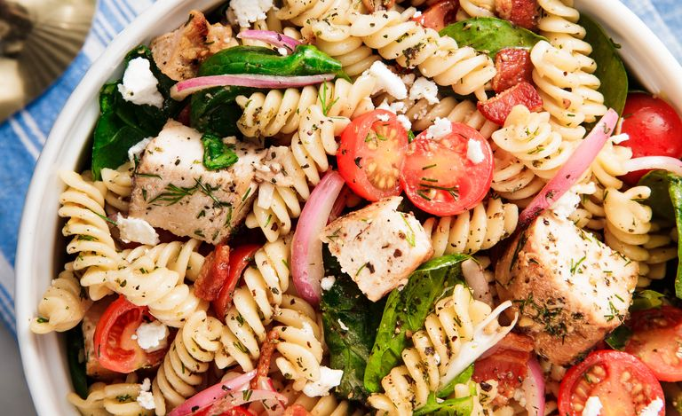

Chicken Pasta Salad

Description
Light and delicious chicken pasta salad
Ingredients
For Salad
- 1 lb fusili pasta
- 1 lb boneless skinless chicken breast
- 1 tsp garlic powder
- salt, pepper
- 1 tbsp olive oil
- 4 slices bacon
- 2 cup halved grape tomatoes
- 2 cup spinach
- 1/2 cup crumbled feta
- 1/4 red onion, thinly sliced
- 2 tbsp freshly chopped dill
For Dressing
- 1/4 cup olive oil
- 3 tbsp red wine vinegar
- 1/2 tsp italian seasoning
- 1 clove garlic, minced
- 1 tbsp dijon mustard
- salt and pepper
Steps
- Cook pasta according to package directions
- Season chicken breasts with garlic powder, salt and pepper. In a large skillet over medium heat heat oil and then cook chicken until cooked through. About 8 minutes per side
- Let chicken rest about 10 minutes then cut in to 1 inch pieces
- While cooling, whisk together oil, vinegar, seasoning, garlic, mustard, salt and pepper in a medium bowl to make dressing
- In a large bowl with pasta, toss together all remaining ingredients. Pour dressing over salad and toss until coated, then serve